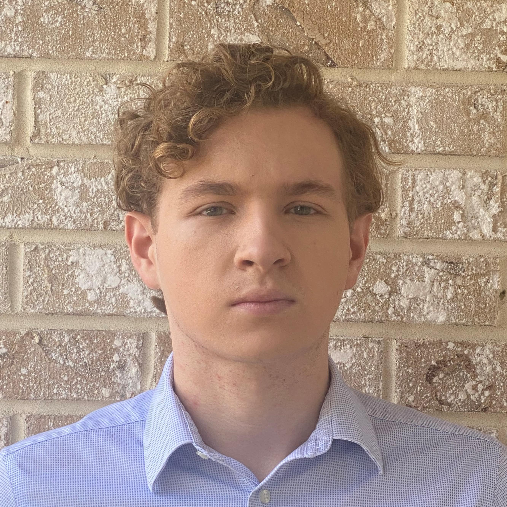

Arthur Wayne
President, Portfolio Manager
Arthur is a sophomore from New Jersey majoring in Policy Analysis and Management with minors in Computer Science and Data Science. He currently runs Gamma Convexity, an online financial research journal and frequently spends his time researching and developing algorithmic trading strategies. For fun, he enjoys playing poker, basketball, and volleyball. Contact Arthur at asw263@cornell.edu.
Josh Park
Vice President, Head of Education
Josh is a sophomore from New Jersey double majoring in Mathematics and Computer Science and minoring in music. His academic interests lie in probability theory, machine learning, and competitive programming. On campus, he currently works as a consultant for CS 2110. When he's not holding office hours or hanging out with friends, Josh enjoys playing percussion, rock climbing, and playing games online. Josh can be reached at jcp336@cornell.edu.

Alex Weisenbach
Head of Research
Alex is a sophomore from Indiana majoring in Mathematics and Computer Science. Alex is interested in applying computer science and mathematics to create scalable solutions for the trading of capital markets. His primary academic interests lie in applied mathematical statistics and software development. When Alex is not working on coursework, he spends significant time trading his family’s capital and developing new trading strategies. If you have a burning question regarding variance swap convexity, volatility surfaces, or anything else, Alex can be reached at ajw338@cornell.edu.
Luke Gastelu
Treasurer
Luke is a sophomore from Armonk, NY in the ILR school. Outside of school, he is the head debate coach for Byram Hills High School and is in the Spanish Debate Society at Cornell. Luke enjoys weightlifting, soccer, basketball, and binging Netflix. Luke can be reached at lag286@cornell.edu.
Eli Tolz
Recruitment Chair
Eli is a sophomore in the ILR school. Eli can be reached at ebt37@cornell.edu.

William Gibbons
Events Director
William Gibbons is a sophomore Industrial and Labor Relations major pursuing a career in the financial markets. He is originally from the Northshore of Chicago, but spent some of high school and college in San Diego. Before going into college, William was planning on working into the healthcare industry, but in college he discovered a passion for economics and finance. The aspect of financial markets that he finds most interesting is risk, because markets can help quantify the abstract concept of risk and allow for market participants to take positions to increase or decrease their level of risk to a certain underlying. At the Cornell Quant Fund, he will continue to explore his interests in understanding risk. Will can be reached at wcg42@cornell.edu.

{kind=link}
{kind=link}
{kind=link}
{kind=link}
{kind=link}